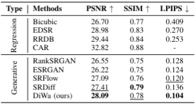

This paper presents a novel Diffusion-Wavelet (DiWa) approach for Single-Image Super-Resolution (SISR). It leverages the strengths of Denoising Diffusion Probabilistic Models (DDPMs) and Discrete Wavelet Transformation (DWT). By enabling DDPMs to operate in the DWT domain, our DDPM models effectively hallucinate high-frequency information for super-resolved images on the wavelet spectrum, resulting in high-quality and detailed reconstructions in image space. Quantitatively, we outperform state-of-the-art diffusion-based SISR methods, namely SR3 and SRDiff, regarding PSNR, SSIM, and LPIPS on both face (8x scaling) and general (4x scaling) SR benchmarks. Meanwhile, using DWT enabled us to use fewer parameters than the compared models: 92M parameters instead of 550M compared to SR3 and 9.3M instead of 12M compared to SRDiff. Additionally, our method outperforms other state-of-the-art generative methods on classical general SR datasets while saving inference time. Finally, our work highlights its potential for various applications.
Our work introduces the Diffusion-Wavelet (DiWa) approach, a novel method that addresses the challenges faced by traditional Super-Resolution (SR) techniques. Traditional regression-based methods, like standard convolutional neural networks, often struggle with producing high-frequency details needed for high magnification ratios. Generative models in general, and more specifically, diffusion models, have shown better performance in these areas but still fall short in terms of computational efficiency and capturing finer details. DiWa leverages the frequency domain (via discrete wavelet transform) within the diffusion pipeline to enhance image quality and speed up the iterative generation process. By operating in the frequency domain rather than the pixel space, DiWa is able to better capture and preserve essential high-frequency features. This approach not only improves image quality but also reduces the computational load, making diffusion models for image SR more accessible.
Despite iterating over fewer samples and having a significantly smaller parameter size (92M compared to 550M), DiWa achieves a 0.3 dB improvement in PSNR and a 0.02 improvement in SSIM over SR3 for 8x face SR. These results highlight the effectiveness of our method, especially in scenarios where the low-resolution input image lacks sufficient information. Our use of frequeny domain allows for the inference or synthesis of additional details, leading to higher quality reconstructions. A similar pattern emerges for general SR in comparison to SRDiff and other generative models (see paper for more details)

@misc{moser2023wavinggoodbyelowresdiffusionwavelet,
title={Waving Goodbye to Low-Res: A Diffusion-Wavelet Approach for Image Super-Resolution},
author={Brian Moser and Stanislav Frolov and Federico Raue and Sebastian Palacio and Andreas Dengel},
year={2023},
eprint={2304.01994},
archivePrefix={arXiv},
primaryClass={cs.CV},
url={https://arxiv.org/abs/2304.01994},
}